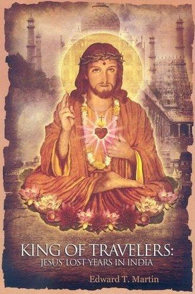
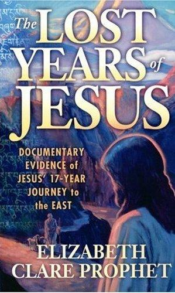
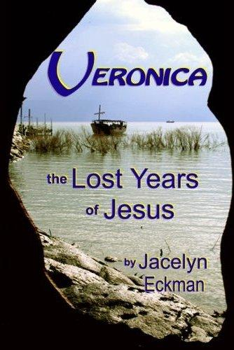
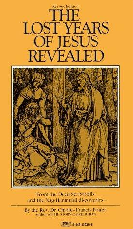
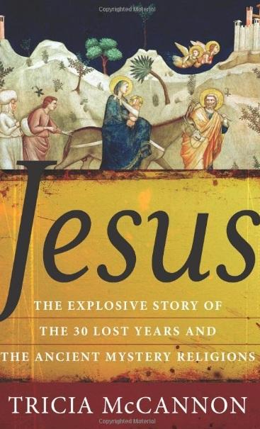
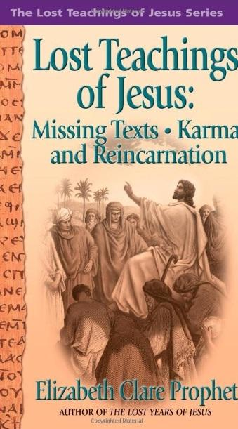
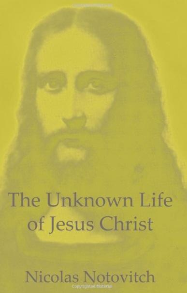
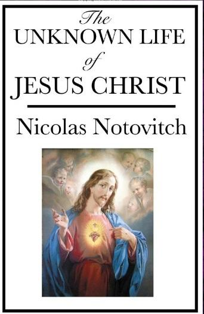
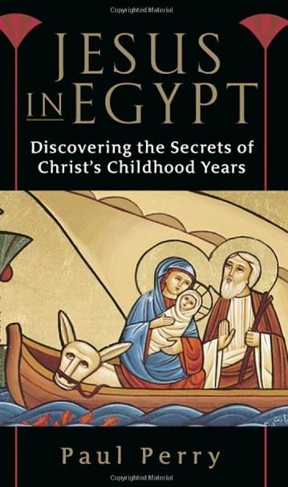
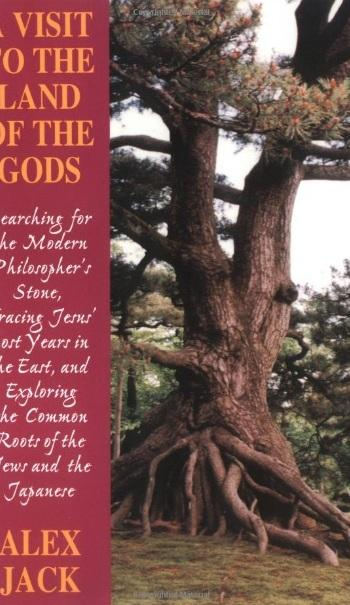
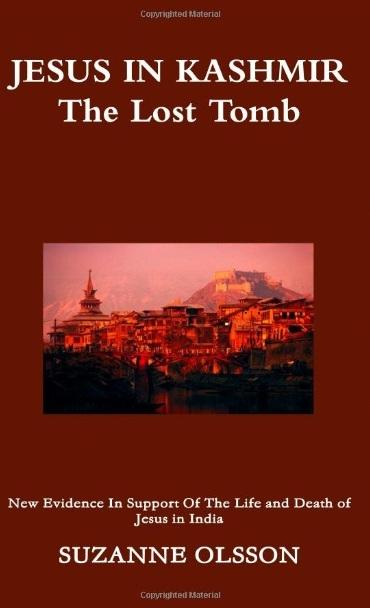
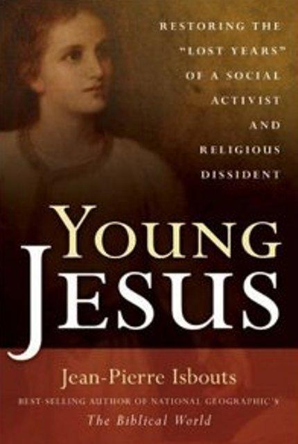

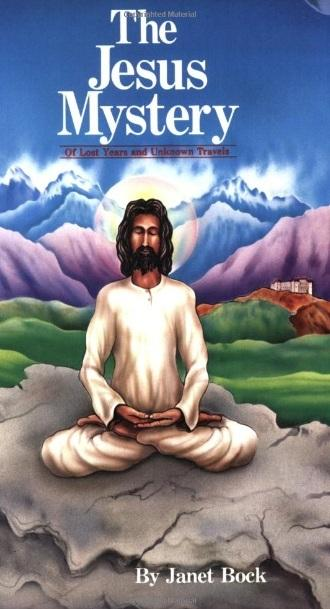

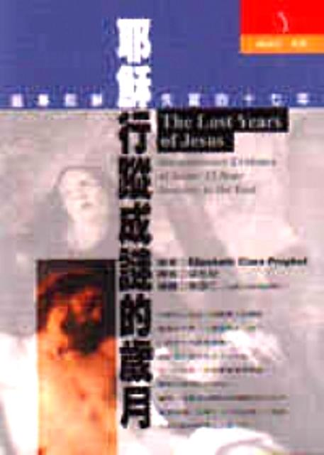
我一直投放了大量心力在研究耶穌基督失蹤十八至二十年間這問題之上，所購買及收集到的各種書籍以及相關資料亦相當豐富。懷緬耶穌基督一生的教跡、學習耶穌基督的無我救世精神，絕對值得花心思精神、時間及金錢去作深入的研究與學習。
問：耶穌基督在十二三歲離開以色列之後究竟去了哪裡？
答：耶穌基督從十二十三歲到三十歲至三十二歲之間的這段時間，共失蹤最少約十八至二十年的歲月，在聖經新約《四福音》中完全沒有提及。我相信這麼重要的耶穌基督生平資料在福音書中絕對不會沒有提及，而是給教廷刪除了大部份十分關鍵性的重要內容。
聖經的某些古本是寫在羊皮上的，這些視為極密的秘本當然不准予向大眾公開，否則當中完璧的聖經經文沒有經過後人憑私意增刪的內容絕對驚世駭俗，會引來軒然大波及無休止的問題及煩惱在後，公開的反效果卻可能大於正面效果。若欲一窺全豹的話，唯有高人以禪定中陰身夜闖禁宮，讀之而後快，但這樣做又是否犯上不予取之禁戒呢！
在土耳其東部的阿拉臘山，海拔近五千米，由於氣候及政治軍事等因素，一般人絕對無從進入；接近山頂之處，相傳在巨大的冰層下埋封了舊約聖經所記載的挪亞方舟；在此山的山腰有修道院，就收藏有聖經的古羊皮原璧秘本。
如果福音書中若有詳細記載耶穌基督去了東方學習印度婆羅門教的《四吠陀典》、去了印度研修釋迦牟尼佛所說的正法的話，《四福音》就不會再是四福音、猶太教也不會再是猶太教，更不會發展成今日的基督教了。
耶穌基督去了印度學佛，這個問題爭論已久，在基督教徒眼中更視為異端邪說而加以攻擊；但假使有朝一日證明耶穌基督離開家鄉後確實去了印度及西藏等地參學佛法、之後再回鄉傳道救世的話，那原來猶太教、基督教及佛教本是一家，本是同根同源的一種思想、教法及宗教，只是因應不同地方、不同種族人群的文化程度及內在資質根基而開演或深或淺的度世模式及說法；那耶穌基督道成肉身降世的使命、救贖人類的偉大工程，就不局限於某一宗教；那耶穌基督的神聖生命是屬於所有人類而出生的，是為一切受苦受難的眾生而來到這個世界之上，從微觀走向宏觀，從狹義的基督教走向廣義的佛教中去，再從佛教走向無宗無教無乘無派的宇宙終極真理當中。
若往更深一層來探索，耶穌基督仍沒降世在天界之前，如果耶穌基督是佛教所說自認創世的大梵天王的兒子，初禪天大梵天王亦是古婆羅門教及現在印度教的最高主神，從梵天降生人間身負救世使命；那基督教的上帝，在神學上的神格就相當於佛教中的大梵天王，一即二，二即一。色界初禪天主大梵天王及欲界三十三天之主帝釋天是佛教中的大護法神，那基督教和佛教只是名義上的不同罷了。
在我個人的認知及研修中，我認為佛教與猶太教本是同源；猶如猶太教與基督教一樣，本是同根同源的雙生同胞親兄弟，奈何受各種政治及人為因素，風俗文化及時代背景等種種原因的影響，以至於在宗教的表象上好像顯現出極大的差異及分歧。但耶穌基督衣著極之簡樸，裝束極像當時古印度的偏袒右肩的修行人；耶穌基督手結劍指劃出十字，極像當時印度密教修行人的手印；耶穌基督手持唸珠，為古代婆羅門教修道者以及印度僧侶用來誦經唸佛的法器之一。
原罪即是前業、冥想即是禪定、祈禱即是唸經唸佛誦咒、十戒即是五戒十善的濃縮、博愛即是慈悲、神蹟即是神通等等等等，既同不同，說非本是；三教及五教本是同根同源，何必勢成水火、互攻其短？當日本是同根同生、連枝同氣；今朝相煎何其有你沒我、太厲太急呢！
大家應該彼此互相包容，取長補短，在此末世末法波旬天魔及撒旦魔王當道之時，一同團結起來不分你我，共同為利益及救度天下蒼生而作出無我無私之奉獻，這才是無偽無為的修道本旨、這方才是耶穌基督所要傳的正真之道、諸佛菩薩的慧命正宗。
同根生，豈可兩相煎；邪正界，又豈忍讓我來辨？
同心劍，摧魔威力似雷電；誰知青鋒，竟斬不斷障恨纏。
高頂深淵，替受眾苦也無懼；兩教爭端，卻令我一生掛牽！
菩薩子孫，相偕相伴宇宙無敵；
願倆釋怨，衝出阻難再見青天；
為度生把臂，同續友情萬世萬年。
耶穌基督跟從當時一隊前往以色列作貿易之商隊，歸程時一同前往巴基斯坦東南部的信德省，這是耶穌基督到的第一站。信德省這個地方很特別，大部份的居民都是從印度來的。
耶穌基督到過尼泊爾、拉達克、波斯、阿富汗、土耳其、埃及等國家地方傳道及學習，並進修巴利文、探究吠陀哲學及佛學等奧義。